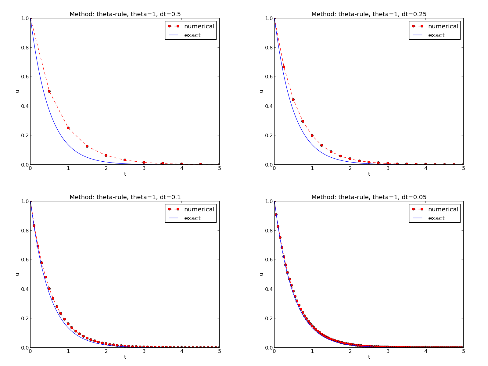
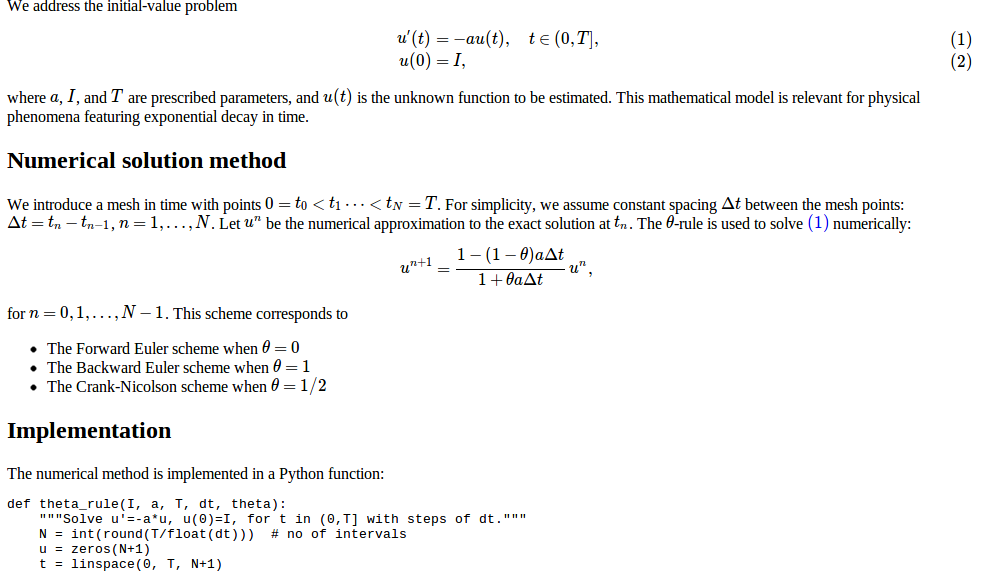
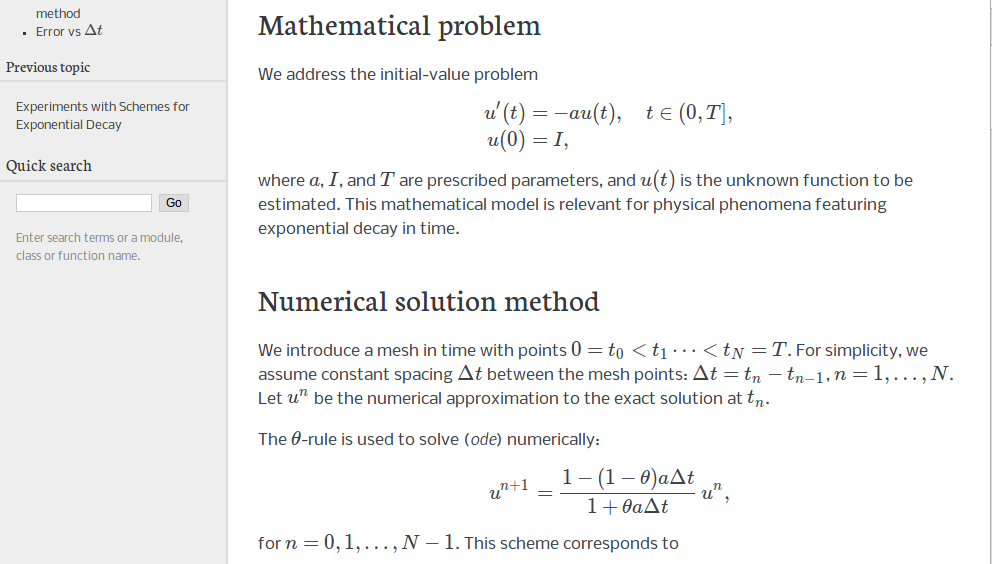

Automating scientific experiments
Empirical scientific investigations based on running computer programs require careful design of the experiments and accurate reporting of results. Although there is a strong tradition to do such investigations manually, the extreme requirements to scientific accuracy make a program much better suited to conduct the experiments. We shall in this section outline how we can write such programs, often called scripts, for running other programs and archiving the results.
For chosen constants \( I \), \( a \), and \( T \), we run the three schemes for various values of \( \Delta t \), and present the following results in a report:
- visual comparison of the numerical and exact solution in a plot for each \( \Delta t \) and \( \theta=0,1,\frac{1}{2} \),
- a table and a plot of the norm of the numerical error versus \( \Delta t \) for \( \theta=0,1,\frac{1}{2} \).
Available software
Appropriate software for implementing (5) is available in a program model.py, which is run as
Terminal> python model.py --I 1.5 --a 0.25 --T 6 --dt 1.25 0.75 0.5
The command-line input corresponds to setting \( I=1.5 \), \( a=0.25 \), \( T=6 \), and run three values of \( \Delta t \): 1.25, 0.75, ad 0.5.
The results of running this model.py command are text in the
terminal window and a set of plot files.
The plot files have names M_D.E, where M denotes the method
(FE, BE, CN for \( \theta=0,1,\frac{1}{2} \), respectively), D
the time step length (here 1.25, 0.75, or 0.5), and E
is the plot file extension png or pdf.
The text output in the terminal window looks like
0.0 1.25: 5.998E-01
0.0 0.75: 1.926E-01
0.0 0.50: 1.123E-01
0.0 0.10: 1.558E-02
0.5 1.25: 6.231E-02
0.5 0.75: 1.543E-02
0.5 0.50: 7.237E-03
0.5 0.10: 2.469E-04
1.0 1.25: 1.766E-01
1.0 0.75: 8.579E-02
1.0 0.50: 6.884E-02
1.0 0.10: 1.411E-02
The first column is the \( \theta \) value, the next the \( \Delta t \) value, and the final column represents the numerical error \( E \) (the norm of discrete error function on the mesh).
Required new results
The results we need for our investigations are slightly different than
what is directly produced by model.py:
- We need to collect all the plots for one numerical method (FE, BE, CN) in a single plot. For example, if 4 \( \Delta t \) values are run, the summarizing plot for the BE method has \( 2\times 2 \) subplots, with the subplot corresponding to the largest \( \Delta t \) in the upper left corner and the smallest in the bottom right corner.
- We need to create a table containing \( \Delta t \) values in the first column and the numerical error \( E \) for \( \theta=0,0.5,1 \) in the next three columns. This table should be available as a standard CSV file.
- We need to plot the numerical error \( E \) versus \( \Delta t \) in a log-log plot.
model.py as described and
produce the results 1-3 above. This requires combining multiple plot files into
one file and interpreting the output from model.py as data for plotting and
file storage.
If the script's name is exper1.py, we run it with the desired \( \Delta t \)
values as positional command-line arguments:
Terminal> python exper1.py 0.5 0.25 0.1 0.05
This run will then generate eight plot files: FE.png and FE.pdf summarizing
the plots with the FE method, BE.png and BE.pdf with
the BE method, CN.png and CN.pdf with the CN method, and error.png
and error.pdf with the log-log plot of the numerical error versus \( \Delta t \).
In addition, the table with numerical errors is written to a
file error.csv.
A project where anyone can easily repeat the experiments with the same data is referred to as being replicable, and replicability should be a fundamental requirement in scientific computing work. Of more scientific interest is reproducibilty, which means that we can also run alternative experiments to arrive at the same conclusions. This requires more than an automating script.
Combining plot files
The script for running experiments needs to combine multiple image
files into one. The
montage
and
convert programs in
the ImageMagick software suite
can be used to combine image files.
However, these programs are best suited for
PNG files. For vector plots in PDF format one needs other tools
to preserve the quality: pdftk, pdfnup, and pdfcrop.
Suppose you have four files f1.png, f2.png, f3.png, and f4.png
and want to combine them into a \( 2\times 2 \) table of subplots in a new
file f.png, see
Figure 4 for an example.
Figure 4: Illustration of the Backward Euler method for four time step values.

The appropriate ImageMagick commands are
Terminal> montage -background white -geometry 100% -tile 2x \
f1.png f2.png f3.png f4.png f.png
Terminal> convert -trim f.png f.png
Terminal> convert f.png -transparent white f.png
The first command mounts the four files in one, the next convert command
removes unnecessary surrounding white space, and the final convert command
makes the white background transparent.
High-quality montage of PDF files f1.pdf,
f2.pdf, f3.pdf, and f4.pdf into f.pdf goes like
Terminal> pdftk f1.pdf f2.pdf f3.pdf f4.pdf output tmp.pdf
Terminal> pdfnup --nup 2x2 --outfile tmp.pdf tmp.pdf
Terminal> pdfcrop tmp.pdf f.pdf
Terminal> rm -f tmp.pdf
Running a program from Python
The script for automating experiments needs to run the model.py program
with appropriate command-line options. Python has several tools for
executing an arbitrary command in the operating systems.
Let cmd be a string containing the desired command.
In the present case study, cmd could be 'python model.py --I 1 --dt 0.5 0.2'.
The following code
executes cmd and loads the text output into a string output:
from subprocess import Popen, PIPE, STDOUT
p = Popen(cmd, shell=True, stdout=PIPE, stderr=STDOUT)
output, _ = p.communicate()
# Check if the execution was successful
failure = p.returncode
if failure:
print 'Command failed:', cmd; sys.exit(1)
Unsuccessful execution usually makes it meaningless to continue
the program, and therefore we abort the program with sys.exit(1).
Any argument different from 0 signifies to the computer's operating system
that our program stopped with a failure.
_ for dummy variable.
Sometimes we need to unpack tuples or lists in separate variables,
but we are not interested in all the variables. One example is
output, error = p.communicate()
but error is of no interest.
One can then use underscore _ as variable name for the dummy
(uninteresting) variable(s):
output, _ = p.communicate()
Here is another example where we iterate over a list of three-tuples, but the interest is limited to the second element in each three-tuple:
for _, value, _ in list_of_three_tuples:
# work with value
We need to interpret the contents of the string
output and store
the data in an appropriate data structure for further processing.
Since the content is basically a table and will be transformed to
a spread sheet format, we let the columns in the table be represented
by lists in the program,
and we collect these columns in a dictionary whose keys are natural
column names: dt and the three values of \( \theta \).
The following code translates the output of cmd (output)
to such a dictionary of lists (errors):
errors = {'dt': dt_values, 1: [], 0: [], 0.5: []}
for line in output.splitlines():
words = line.split()
if words[0] in ('0.0', '0.5', '1.0'): # line with E?
# typical line: 0.0 1.25: 7.463E+00
theta = float(words[0])
E = float(words[2])
errors[theta].append(E)
The automating script
We have now all the core elements in place to write the complete
script where we run
model.py for a set of \( \Delta t \) values (given as positional
command-line arguments), make the error plot,
write the CSV file, and combine plot files as described above.
The complete code is listed below, followed by some explaining comments.
import os, sys, glob
import matplotlib.pyplot as plt
def run_experiments(I=1, a=2, T=5):
# The command line must contain dt values
if len(sys.argv) > 1:
dt_values = [float(arg) for arg in sys.argv[1:]]
else:
print 'Usage: %s dt1 dt2 dt3 ...' % sys.argv[0]
sys.exit(1) # abort
# Run module file and grab output
cmd = 'python model.py --I %g --a %g --T %g' % (I, a, T)
dt_values_str = ' '.join([str(v) for v in dt_values])
cmd += ' --dt %s' % dt_values_str
print cmd
from subprocess import Popen, PIPE, STDOUT
p = Popen(cmd, shell=True, stdout=PIPE, stderr=STDOUT)
output, _ = p.communicate()
failure = p.returncode
if failure:
print 'Command failed:', cmd; sys.exit(1)
errors = {'dt': dt_values, 1: [], 0: [], 0.5: []}
for line in output.splitlines():
words = line.split()
if words[0] in ('0.0', '0.5', '1.0'): # line with E?
# typical line: 0.0 1.25: 7.463E+00
theta = float(words[0])
E = float(words[2])
errors[theta].append(E)
# Find min/max for the axis
E_min = 1E+20; E_max = -E_min
for theta in 0, 0.5, 1:
E_min = min(E_min, min(errors[theta]))
E_max = max(E_max, max(errors[theta]))
plt.loglog(errors['dt'], errors[0], 'ro-')
plt.loglog(errors['dt'], errors[0.5], 'b+-')
plt.loglog(errors['dt'], errors[1], 'gx-')
plt.legend(['FE', 'CN', 'BE'], loc='upper left')
plt.xlabel('log(time step)')
plt.ylabel('log(error)')
plt.axis([min(dt_values), max(dt_values), E_min, E_max])
plt.title('Error vs time step')
plt.savefig('error.png'); plt.savefig('error.pdf')
# Write out a table in CSV format
f = open('error.csv', 'w')
f.write(r'$\Delta t$,$\theta=0$,$\theta=0.5$,$\theta=1$' + '\n')
for _dt, _fe, _cn, _be in zip(
errors['dt'], errors[0], errors[0.5], errors[1]):
f.write('%.2f,%.4f,%.4f,%.4f\n' % (_dt, _fe, _cn, _be))
f.close()
# Combine images into rows with 2 plots in each row
image_commands = []
for method in 'BE', 'CN', 'FE':
pdf_files = ' '.join(['%s_%g.pdf' % (method, dt)
for dt in dt_values])
png_files = ' '.join(['%s_%g.png' % (method, dt)
for dt in dt_values])
image_commands.append(
'montage -background white -geometry 100%' +
' -tile 2x %s %s.png' % (png_files, method))
image_commands.append(
'convert -trim %s.png %s.png' % (method, method))
image_commands.append(
'convert %s.png -transparent white %s.png' %
(method, method))
image_commands.append(
'pdftk %s output tmp.pdf' % pdf_files)
num_rows = int(round(len(dt_values)/2.0))
image_commands.append(
'pdfnup --nup 2x%d --outfile tmp.pdf tmp.pdf' % num_rows)
image_commands.append(
'pdfcrop tmp.pdf %s.pdf' % method)
for cmd in image_commands:
print cmd
failure = os.system(cmd)
if failure:
print 'Command failed:', cmd; sys.exit(1)
# Remove the files generated above and by model.py
from glob import glob
filenames = glob('*_*.png') + glob('*_*.pdf') + glob('tmp*.pdf')
for filename in filenames:
os.remove(filename)
if __name__ == '__main__':
run_experiments(I=1, a=2, T=5)
plt.show()
We may comment upon many useful constructs in this script:
-
[float(arg) for arg in sys.argv[1:]]builds a list of real numbers from all the command-line arguments. -
['%s_%s.png' % (method, dt) for dt in dt_values]builds a list of filenames from a list of numbers (dt_values). - All
montage,convert,pdftk,pdfnup, andpdfcropcommands for creating composite figures are stored in a list and later executed in a loop. -
glob('*_*.png')returns a list of the names of all files in the current directory where the filename matches the Unix wildcard notation*_*.png(meaning any text, underscore, any text, and then.png). -
os.remove(filename)removes the file with namefilename. -
failure = os.system(cmd)runs an operating system command with simpler syntax than what is required bysubprocess(but the output ofcmdcannot be captured).
Making a report
The results of running computer experiments are best documented in a little report containing the problem to be solved, key code segments, and the plots from a series of experiments. At least the part of the report containing the plots should be automatically generated by the script that performs the set of experiments, because in the script we know exactly which input data that were used to generate a specific plot, thereby ensuring that each figure is connected to the right data. Take a look at a sample report to see what we have in mind.
Word, OpenOffice, GoogleDocs
Microsoft Word, its open source counterparts OpenOffice and LibreOffice, along with GoogleDocs and similar online services are the dominating tools for writing reports today. Nevertheless, scientific reports often need mathematical equations and nicely typeset computer code in monospace font. The support for mathematics and computer code in the mentioned tools is in this author's view not on par with the technologies based on markup languages and which are addressed below. Also, with markup languages one has a readable, pure text file as source for the report, and changes in this text can easily be tracked by version control systems like Git. The result is a very strong tool for monitoring "who did what when" with the files, resulting in increased reliability of the writing process. For collaborative writing, the merge functionality in Git leads to safer simultaneously editing that what is offered even by collaborative tools like GoogleDocs.
HTML with MathJax
HTML is the markup language used for web pages. Nicely typeset computer
code is straightforward in HTML, and high-quality mathematical
typesetting is available using an extension to HTML called MathJax, which allows formulas and equations to be
typeset with LaTeX syntax and nicely rendered in web browsers, see
Figure 5. A relatively small
subset of LaTeX environments for mathematics is supported, but the
syntax for formulas is quite rich. Inline formulas look like \(
u'=-au \) while equations are surrounded by $$ signs. Inside such
signs, one can use \[ u'=-au \] for unnumbered equations, or
\begin{equation} and \end{equation} for
numbered equations, or \begin{align} and \end{align} for multiple
numbered aligned equations. You need to be familiar with mathematical
typesetting in LaTeX to write MathJax
code.
The file exper1_mathjax.py calls a script exper1.py to perform the numerical experiments and then runs Python statements for creating an HTML file with the source code for the scientific report.
Figure 5: Report in HTML format with MathJax.

LaTeX
The de facto language for mathematical typesetting and scientific report writing is LaTeX. A number of very sophisticated packages have been added to the language over a period of three decades, allowing very fine-tuned layout and typesetting. For output in the PDF format, see Figure 6 for an example, LaTeX is the definite choice when it comes to typesetting quality. The LaTeX language used to write the reports has typically a lot of commands involving backslashes and braces, and many claim that LaTeX syntax is not particularly readable. For output on the web via HTML code (i.e., not only showing the PDF in the browser window), LaTeX struggles with delivering high quality typesetting. Other tools, especially Sphinx, give better results and can also produce nice-looking PDFs. The file exper1_latex.py shows how to generate the LaTeX source from a program.
Figure 6: Report in PDF format generated from LaTeX source.

Sphinx
Sphinx is a typesetting language with
similarities to HTML and LaTeX, but with much less tagging. It has
recently become very popular for software documentation and
mathematical reports. Sphinx can utilize LaTeX for mathematical
formulas and equations. Unfortunately, the
subset of LaTeX mathematics supported is less than in full MathJax (in
particular, numbering of multiple equations in an align type
environment is not supported). The Sphinx syntax is an extension of
the reStructuredText language. An attractive feature of Sphinx is its
rich support for fancy layout of web pages. In particular,
Sphinx can easily be combined with various layout themes that give a
certain look and feel to the web site and that offers table of
contents, navigation, and search facilities, see Figure
7.
Figure 7: Report in HTML format generated from Sphinx source.

Markdown
A recent, very popular format for easy writing of web pages is Markdown. Text is written very much like one would do in email, using spacing and special characters to naturally format the code instead of heavily tagging the text as in LaTeX and HTML. With the tool Pandoc one can go from Markdown to a variety of formats. HTML is a common output format, but LaTeX, epub, XML, OpenOffice/LibreOffice, MediaWiki, and Microsoft Word are some other possibilities. A Markdown version of our scientific report demo is available as an IPython/Jupyter notebook (described next).
IPython/Jupyter notebooks
The IPython Notebook is a web-based tool where one can write scientific reports with live computer code and graphics. Or the other way around: software can be equipped with documentation in the style of scientific reports. A slightly extended version of Markdown is used for writing text and mathematics, and the source code of a notebook is in json format. The interest in the notebook has grown amazingly fast over just a few years, and further development now takes place in the Jupyter project, which supports a lot of programming languages for interactive notebook computing. Jupyter notebooks are primarily live electronic documents, but they can be printed out as PDF reports too. A notebook version of our scientific report can be downloaded and experimented with or just statically viewed in a browser.
Wiki formats
A range of wiki formats are popular for creating notes on the web, especially documents which allow groups of people to edit and add content. Apart from MediaWiki (the wiki format used for Wikipedia), wiki formats have no support for mathematical typesetting and also limited tools for displaying computer code in nice ways. Wiki formats are therefore less suitable for scientific reports compared to the other formats mentioned here.
DocOnce
Since it is difficult to choose the right tool or format for writing a scientific report, it is advantageous to write the content in a format that easily translates to LaTeX, HTML, Sphinx, Markdown, IPython/Jupyter notebooks, and various wikis. DocOnce is such a tool. It is similar to Pandoc, but offers some special convenient features for writing about mathematics and programming. The tagging is modest, somewhere between LaTeX and Markdown. The program exper1_do.py demonstrates how to generate DocOnce code for a scientific report. There is also a corresponding rich demo of the resulting reports that can be made from this DocOnce code.
Publishing a complete project
To assist the important principle of replicable science, a report documenting scientific investigations should be accompanied by all the software and data used for the investigations so that others have a possibility to redo the work and assess the qualify of the results.
One way of documenting a complete project is to make a directory tree with all relevant files. Preferably, the tree is published at some project hosting site like Bitbucket or GitHub so that others can download it as a tarfile, zipfile, or clone the files directly using the Git version control system. For the investigations outlined in the section Making a report, we can create a directory tree with files
setup.py
./src:
model.py
./doc:
./src:
exper1_mathjax.py
make_report.sh
run.sh
./pub:
report.html
The src directory holds source code (modules) to be reused in other projects,
the setup.py script builds and installs such software,
the doc directory contains the documentation, with src for the
source of the documentation (usually written in a markup language)
and pub for published (compiled) documentation.
The run.sh file is a simple Bash script listing the python commands
we used to run exper1_mathjax.py to generate the experiments and
the report.html file.